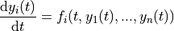
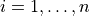
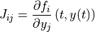
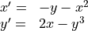

Ordinary Differential Equations¶
Overview¶
This chapter describes functions for solving ordinary differential equation (ODE) initial value problems.
Note
The ODE integration routines in GSL Shell are based on GSL routines but they are completely rewritten in Lua. Only a few integration methods are actually available for the moment such as Runge-Kutta-Fehlberg and Price-Dormand methods.
The actual interface is also likely to be changed in the near future to handle ODE systems in array form.
In GSL Shell an ODE system is integrated by using an ODE solver object. The ODE solver store internally the state of the solver and you can advance the solution step-by-step until, eventually, the desired value of t is reached.
Creating a ODE system solver¶
An ODE solver allows users to obtain a numerical solution of an Ordinary Differential Equation (ODE) system. The ODE solver lets you solve the general n-dimensional first-order system,

for .
The stepping functions rely on the vector of derivatives  and, for some methods, also on the Jacobian matrix,
and, for some methods, also on the Jacobian matrix,

For the moment all the methods implemented in GSL Shell does not use the Jacobian matrix.
Note
The current implementation is limited to systems with a few number of variables. Probably you should avoid to use it if you have more than 20 variables. An implementation for ODE systems in array form may be available in the future.
ODE solver usage example¶
Here an examples about the usage of an ODE solver. The differential equation that we want integrate is:

and here the code that we can write to implement it:
-- define the ODE function
function odef(t, x, y)
return -y-x^2, 2*x - y^3
end
-- create the ODE solver
s = num.ode {N= 2, eps_abs= 1e-8}
-- we define initial values
t0, t1, h0 = 0, 30, 0.04
x0, y0 = 1, 1
-- we initialize the ODE solver
s:init(t0, h0, odef, x0, y0)
-- the ODE solver is iterated till the time t1 is reached
while s.t < t1 do
s:step(t1)
end
In alternative you may want to make a plot of the curve that you obtain. Here an example, we create a “path” to describe the curve that we want to plot and then we iterate with the ODE solver and we add all the points with the “line_to” method. The we create an empty plot and we add the line that we have just created:
-- we create a line and add the points obtained by integrating the ODE
ln = graph.path(x0, y0)
while s.t < t1 do
s:step(t1)
ln:line_to(s.y[1], s.y[2])
end
-- we create the plot by adding the line
p = graph.plot('ODE integration example')
p:addline(ln)
p:show()
And here the plot that you will obtain:
Curve obtained by integration of the above ODE system.¶
A Slightly Improved Example¶
In the example given above we have used the step() method to advance the ODE integrator.
When you use ODE.step() the ODE integrator will adapt at each step the step size in order to respect the maximum absolute and relative error that you requested.
This is a quite convenient behaviour but it can have a drawback since the sampling points can be very tightly packed or very largely spaced depending on the ODE system and the integration method.
In some cases this is undesirable and you may want to obtain the values with a fixed sampling size.
In this case you can use the evolve() method to obtain the values with a given sampling step.
So, in the example above you can change the while loop and use the evolve() method instead:
-- we create a line and add the points obtained by integrating the ODE
ln = graph.path(x0, y0)
for t, y1, y2 in s:evolve(t1, 0.1) do
ln:line_to(y1, y2)
end
to obtain values sampled with a spacing of 0.1 for the t values.
You can see that the evolve() method works actually as a Lua iterator.
You may also note that the evolve() iterator provides at each iteration the value t and each of the system variables in the standard order.
ODE value logger¶
During the solution of the differential equation it may be useful to store the values of some user-defined derived quantities. To this purpose the ODE function will be called, at some steps with an additional argument of Record type. The record argument can be used by calling its store method in the form:
odef(t, y_1, ..., y_N, log)
-- compute whatever is needed here
if log then
-- store some values if the log argument is provided
log:store(t, {der_value1 = some_value, der_value2 = ...}
end
-- return the derivatives
return dy_1, ..., dy_N
end
Please note that the additional argument will be provided only at some specific steps when the final time of the integration step actually meets the required final time provided to the step function. You are therefore required into the ODE function to check if the additional argument to record the value is not nil.
ODE Solver Class Definition¶
- class num.ODE¶
Solver of ODE system.
- ode(spec)¶
Create a new solver for an ODE system. The
specshould be a table containing the following fields:- N
The dimension of the ODE system.
- eps_abs
The maximum absolute error in the y that should be tolerated.
- eps_rel, optional
The maximum relative error in the y that should be tolerated.
- method, optional
The low-level integration method used. Can be chosen between:
rkf45, Embedded Runge-Kutta-Fehlberg (4, 5) method. This method is a good general-purpose integrator.
rk8pd, Embedded Runge-Kutta Prince-Dormand (8,9) method.
- step_min, optional
The smaller step the solver is allowed to use. Please note that if set the accuracy may be degraded bacause the solver may need to set a smaller step to meet the required precision. This option is useful to avoid excessively increase the computation time by making a compromise with the accuracy.
- init(t0, h0, f, y0_1, y0_2, ..., y0_N)¶
Initialize the state of the solver to the time
t0. The second argumenth0is the initial step size that the integrator will try. The functionfis the function that defines the ODE system. It will be called likef(t, y_1, y_2, ..., y_N)wheretis the time andy_1, y_2, ...are the values of the N independent values conventionally denoted here by ‘y’. The functionfshould return N values that correspond to valuesf_i(t, y_1, ..., y_N)for each componentf_iof the ODE system function.The function
fcan be called with an additional argument of Record type at the end to log the ODE values. In this case it will be called with arguments:f(t, y_1, y_2, ..., y_N, log). The additional argument will be provided only for some specific calls.
- step(t1)¶
Advance the solution of the system by a step chosen adaptively based on the previous step size. The new values (t, y) are stored internally by the solver and can be retrieved as properties with the name
tandywhere the latter is a column matrix of size N. The new values of t will be less than or equal to the value givent1. If the values.tis less thent1then the function evolve should be called again by the user.
- evolve(t1, t_step)¶
Returns a Lua iterator that advance the ODE system at each iteration of a step
t_stepuntil the valuet1is reached. The iterators returns the valuetitself and all the system variablesy0,y1, … in the standard order.Example:
-- we suppose an ODE system 's' is already defined and initialized local t1 = 50 for t, y1, y2 in s:evolve(t1, 0.5) do print(t, y1, y2) end
- evolve_to(t)¶
Solve the ODE equations up to the time
tand returns the corresponding system variablesy0,y1, … in the standard order.